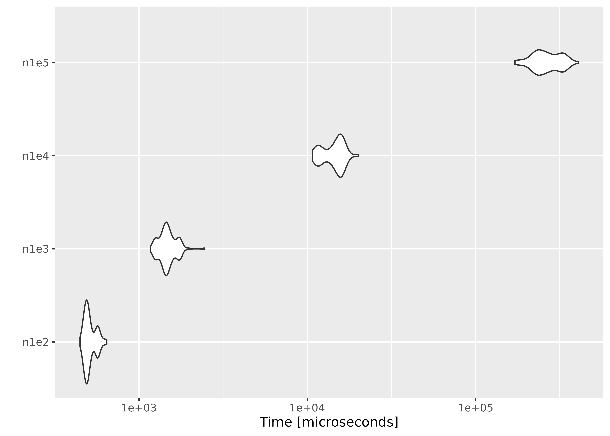
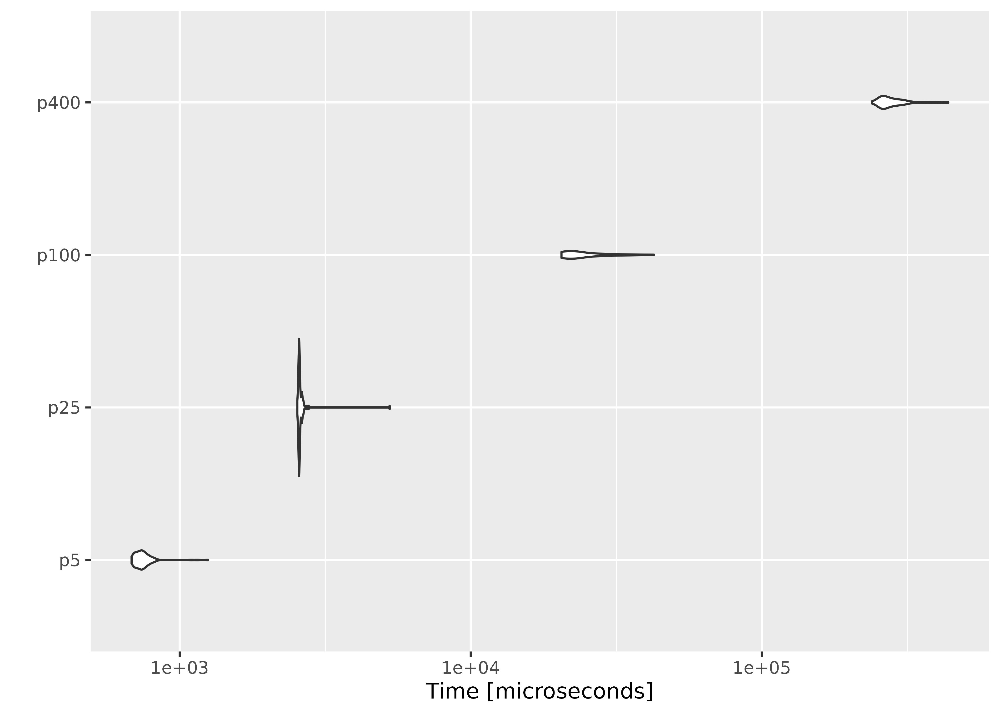

All the tests were done on an Arch Linux x86_64 machine with an Intel(R) Core(TM) i7 CPU (1.90GHz).
We show the performance of computing empirical likelihood with
el_mean(). We test the computation speed with simulated
data sets in two different settings: 1) the number of observations
increases with the number of parameters fixed, and 2) the number of
parameters increases with the number of observations fixed.
We fix the number of parameters at \(p =
10\), and simulate the parameter value and \(n \times p\) matrices using
rnorm(). In order to ensure convergence with a large \(n\), we set a large threshold value using
el_control().
library(ggplot2)
library(microbenchmark)
set.seed(3175775)
p <- 10
par <- rnorm(p, sd = 0.1)
ctrl <- el_control(th = 1e+10)
result <- microbenchmark(
n1e2 = el_mean(matrix(rnorm(100 * p), ncol = p), par = par, control = ctrl),
n1e3 = el_mean(matrix(rnorm(1000 * p), ncol = p), par = par, control = ctrl),
n1e4 = el_mean(matrix(rnorm(10000 * p), ncol = p), par = par, control = ctrl),
n1e5 = el_mean(matrix(rnorm(100000 * p), ncol = p), par = par, control = ctrl)
)Below are the results:
result
#> Unit: microseconds
#> expr min lq mean median uq max
#> n1e2 442.054 462.2265 491.9992 476.248 514.2285 769.955
#> n1e3 1107.374 1287.7600 1383.9986 1367.188 1463.2220 2175.694
#> n1e4 9899.349 11576.8450 13178.8451 13635.121 14467.0365 16904.774
#> n1e5 144520.755 208618.4795 238707.0932 229155.193 276630.9005 333444.210
#> neval
#> 100
#> 100
#> 100
#> 100
autoplot(result)
This time we fix the number of observations at \(n = 1000\), and evaluate empirical likelihood at zero vectors of different sizes.
n <- 1000
result2 <- microbenchmark(
p5 = el_mean(matrix(rnorm(n * 5), ncol = 5),
par = rep(0, 5),
control = ctrl
),
p25 = el_mean(matrix(rnorm(n * 25), ncol = 25),
par = rep(0, 25),
control = ctrl
),
p100 = el_mean(matrix(rnorm(n * 100), ncol = 100),
par = rep(0, 100),
control = ctrl
),
p400 = el_mean(matrix(rnorm(n * 400), ncol = 400),
par = rep(0, 400),
control = ctrl
)
)
result2
#> Unit: microseconds
#> expr min lq mean median uq max neval
#> p5 688.593 716.5405 750.2965 739.483 765.532 1180.089 100
#> p25 2529.655 2560.7525 2632.2805 2576.331 2611.743 5224.547 100
#> p100 20441.916 20741.5945 24469.2288 22835.833 27021.984 41076.172 100
#> p400 238983.819 258477.4090 285795.3486 263188.748 301618.333 433944.125 100
autoplot(result2)
On average, evaluating empirical likelihood with a 100000×10 or 1000×400 matrix at a parameter value satisfying the convex hull constraint takes less than a second.